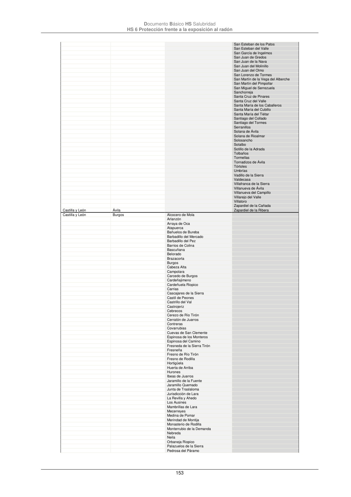

DB-HS Salubridad · edición 2022-06-14 · capa oficial
Documento DB-HS-oficial · SHA-256 del PDF 68df3caacc95f71aee2ec1ba7b2c65ae66155c21e3a8785521b8fdd4fd640d3b
Página física 153 de 184.
Copia fiel del PDF fuente · Fuente oficial
Ficha de la disposición en la fuente oficial
Formato: Texto de la página (Markdown)
Documento Básico HS Salubridad HS 6 Protección frente a la exposición al radón 153 San Esteban de los Patos San Esteban del Valle San García de Ingelmos San Juan de Gredos San Juan de la Nava San Juan del Molinillo San Juan del Olmo San Lorenzo de Tormes San Martín de la Vega del Alberche San Martín del Pimpollar San Miguel de Serrezuela Sanchorreja Santa Cruz de Pinares Santa Cruz del Valle Santa María de los Caballeros Santa María del Cubillo Santa María del Tiétar Santiago del Collado Santiago del Tormes Serranillos Solana de Ávila Solana de Rioalmar Solosancho Sotalbo Sotillo de la Adrada Tolbaños Tormellas Tornadizos de Ávila Tórtoles Umbrías Vadillo de la Sierra Valdecasa Villafranca de la Sierra Villanueva de Ávila Villanueva del Campillo Villarejo del Valle Villatoro Zapardiel de la Cañada Castilla y León Ávila Zapardiel de la Ribera Castilla y León Burgos Alcocero de Mola Arlanzón Arraya de Oca Atapuerca Bañuelos de Bureba Barbadillo del Mercado Barbadillo del Pez Barrios de Colina Bascuñana Belorado Brazacorta Burgos Cabeza Alta Campolara Carcedo de Burgos Cardeñajimeno Cardeñuela Riopico Carrias Cascajares de la Sierra Castil de Peones Castrillo del Val Castrojeriz Cebrecos Cerezo de Río Tirón Cerratón de Juarros Contreras Covarrubias Cuevas de San Clemente Espinosa de los Monteros Espinosa del Camino Fresneda de la Sierra Tirón Fresneña Fresno de Río Tirón Fresno de Rodilla Hortigüela Huerta de Arriba Hurones Ibeas de Juarros Jaramillo de la Fuente Jaramillo Quemado Junta de Traslaloma Jurisdicción de Lara La Revilla y Ahedo Los Ausines Mambrillas de Lara Mecerreyes Medina de Pomar Merindad de Montija Monasterio de Rodilla Monterrubio de la Demanda Nebreda Neila Orbaneja Riopico Palazuelos de la Sierra Pedrosa del Páramo

Datos candidatos: compruebe celdas y notas en el PDF.